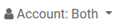

> Accounting Report
รายงานทางการเงินสำหรับ Odoo V.13 (Enterprise Edition)
รายงานทางการเงินสำหรับ Odoo V.13 (Enterprise Edition)
รายงานทางการเงิน หรือ การสื่อข้อมูลทางการเงินเพื่อให้บุคคลภายใน และบุคคลภายนอกนําไปใช้ในการตัดสินใจเชิงเศรษฐกิจ โดยมีงบการเงินเป็นส่วนประกอบที่สําคัญของการรายงานทางการเงิน ทั้งนี้อาจจะทําในรูปแบบของรายงานภายในกิจการ รายงานประจําปี
Odoo มีรายงานทางการเงินดังนี้

เมื่อเข้ามาที่หน้ารายงาน ระบบจะแสดงข้อมูลเริ่มต้น ดังนี้
 โดยระบบจะแสดง ค่าเริ่มต้นเป็นเดือนปัจจุบัน แต่สามารถเลือกได้ว่าต้องการดูรายงาน ในช่วงเวลาใด
โดยระบบจะแสดง ค่าเริ่มต้นเป็นเดือนปัจจุบัน แต่สามารถเลือกได้ว่าต้องการดูรายงาน ในช่วงเวลาใด
- This Month : เดือนปัจจุบัน
- This Quarter : ไตรมาสปัจจุบัน
- This Financial Year : ปีปัจจุบัน
- Last Month : เดือนก่อนหน้า
- Last Quarter : ไตรมาสก่อนหน้า
- Last Financial Year : ปีก่อนหน้า
- Custom : สามารถเลือกวันเริ่มต้น (Start Date) และ วันสิ้นสุด (End Date)
 สามารถดูแบบเปรียบเทียบกันได้
สามารถดูแบบเปรียบเทียบกันได้
- No Comparison : ไม่มีการเปรียบเทียบ
- Previous Period : เดือนก่อนหน้า
- Same Period Last Year : ปีก่อนหน้า
- Custom : สามารถเลือกวันที่เริ่มต้น (Start Date) และ วันสิ้นสุด (End Date) เพื่อมาเปรียบเทียบได้
 สามารถกำหนดได้ว่า จะแสดง Journal ใดบ้าง
สามารถกำหนดได้ว่า จะแสดง Journal ใดบ้าง4.  สามารถเลือกได้ว่าต้องการให้ระบบแสดงเอกสารที่อยู่ในสถานะใดบ้าง
โดยระบบจะเลือกเอกสาร Stage : Posted Entries Only เป็นค่าเริ่มต้น
สามารถเลือกได้ว่าต้องการให้ระบบแสดงเอกสารที่อยู่ในสถานะใดบ้าง
โดยระบบจะเลือกเอกสาร Stage : Posted Entries Only เป็นค่าเริ่มต้น
- Include Unposted Entries : แสดงเอกสารรวมเอกสารที่ยังไม่ถูก Posted
- Hierarchy and Subtotals : แสดงหน้าวิวเป็นรูปแบบ Hierarchy
- Unfold All : แสดงทั้งหมด
 สามารถเลือกได้ว่าจะดู Account ประเภทไหน โดยค่าเริ่มต้นระบบจะเลือกทั้งหมด “Both”
- Payable เจ้าหนี้
- Receivable ลูกหนี้
 สามารถค้นหาเจ้าหนี้/ลูกหนี้ที่ต้องการได้ โดยค่าเริ่มต้นระบบจะแสดงทั้งหมด
สามารถค้นหาเจ้าหนี้/ลูกหนี้ที่ต้องการได้ โดยค่าเริ่มต้นระบบจะแสดงทั้งหมดงบทดลอง เป็นงบที่จัดทำขึ้นด้วยการนำยอดดุลในบัญชีแยกประเภทต่าง ๆ (5 หมวดบัญชี) ไม่ว่าจะอยู่ด้านเดบิต หรือเครดิตก็ตาม มาคำนวณหายอดคงเหลือทั้งสองด้าน เพื่อพิสูจน์ความถูกต้องในการบันทึกบัญชีตามระบบบัญชีคู่ ณ วันใดวันหนึ่ง เช่น ทุกสิ้นเดือน ทุก 3 เดือน หรือเมื่อสิ้นงวดบัญชี

รายงานบัญชีแยกประเภท รายงานที่แสดงข้อมูลตามรหัสบัญชีตามช่วงเวลาที่กำหนด

งบกําไรขาดทุน เป็นรายงานทางการเงินที่แสดงผลการดําเนินงานของกิจการ โดยนํารายได้และค่าใช้จ่ายที่เกิดขึ้นในงวดบัญชีนั้น ๆ มาเปรียบเทียบกัน ผลต่างที่เกิดขึ้นจะเป็นกําไรหรือขาดทุนสุทธิ

งบดุล (Balance Sheet) เป็นรายงานที่แสดงให้เห็นถึงฐานะการเงินของกิจการ ณ วันใดวันหนึ่ง ว่ากิจการมีสินทรัพย์ หนี้สิน ทั้งสิ้นเป็นจํานวนเท่าใด ประกอบด้วยรายการใดบ้าง และคงเหลือเป็นสินทรัพย์สุทธิหรือส่วนของเจ้าของกิจการเป็นจํานวนทั้งสิ้นเท่าใด

เป็นรายงานที่แสดงภาพรวมทางการเงิน เป็นบทสรุปสำหรับการบหริหารภายใน

งบกระแสเงินสด คือ รายงานแสดงถึงกิจกรรมที่เกิดขึ้นในกิจการ ประกอบด้วย กิจกรรมการดำเนินงาน กิจกรรมการลงทุน และกิจกรรมจัดหาเงิน